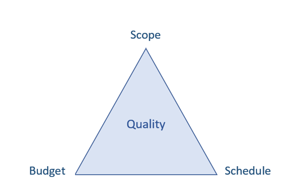
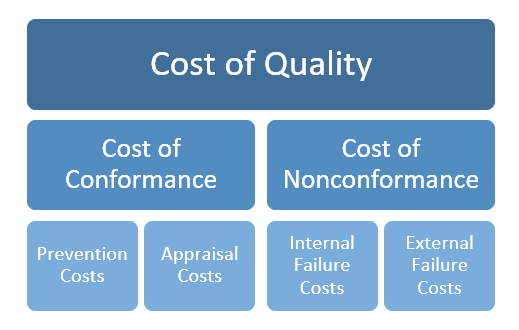
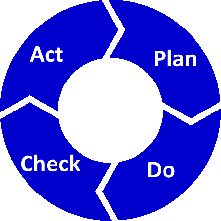

Quality is free. It’s not a gift, but it’s free.
—Philip Crosby
Objectives
After reading this appendix, you will be able to
The Big Ideas in This Appendix
The triple constraints of project management—scope, budget, and schedule—are often referred to as the iron triangle because that name conveys the extent to which these constraints affect the execution and outcome of every project. As you learned in Lesson 3, a change to one constraint necessitates a change to at least one other constraint to keep the triangle whole. For example, if you need to expand the project’s scope, then you’ll have to either increase the budget or slow the schedule to complete the additional work. Similarly, if you decrease the budget, you’ll have to either decrease the schedule or reduce the scope to make it possible to complete the project with the available funds. And speeding up a schedule to complete the stated scope will inevitably require a higher budget.
Any adjustments to the triple constraints can affect the quality of the project’s outcome. That’s why the iron triangle (or the project management triangle, as it is also called) is usually portrayed with the word “Quality” at the center, as shown in Figure B-1. Indeed, many project management experts consider quality to be the fourth constraint on every project.

Quality’s position at the center of the iron triangle emphasizes the need to consider quality when inevitable trade-offs between constraints are made in a living order project. As you learned in Lesson 3, scope evolution often occurs in living order projects as the project team develops a more in-depth understanding of the customer’s requirements. Changes to the scope might result in a revised definition of quality for the product of the project, which could require an extended project timeline. Conversely, cuts to a project’s budget could require that the project team work with the customer to develop a new definition of quality for a particular deliverable.
To help the customer or project sponsor make decisions about balancing project constraints while maintaining the required level of quality, a project leader may undertake a formal or informal cost-benefit analysis, which involves adding up the benefits of a specific action and then subtracting the costs associated with that action (Kenton 2020). This form of analysis is useful when making decisions involving constraint trade-offs as well as larger decisions such as deciding which of two proposed projects to proceed with.
These two articles provide more details on cost-benefit analysis:
The term quality can mean different things in different industries, organizations, and groups of people. But the American Society for Quality (ASQ) spells out two hallmarks of quality: “fitness for use” and “conformance to requirements” (n.d.).
In other words, a product, building, or service can be considered high quality if it is fit for the use for which it was intended and if it conforms to its predefined requirements. But how do you go about making that determination in a way that ensures all stakeholders will agree? You need to create an objective standard in the form of SMART requirements (Smith 2019).
Since the early 1980s, businesses have used variations of SMART criteria to evaluate their objectives. The term “SMART” is an acronym for the following attributes that ensure objectives are actually achievable: specific, measurable, assignable (or agreed on), realistic and time-based. In the context of project quality, the most important aspect of the SMART approach is the need to be specific about scope requirements, so it is clear that the project deliverables meet those requirements. To avoid misunderstandings about quality requirements—and possible rework—defining what is not in scope is just as important as defining what is in scope. You can read more about formulating SMART quality criteria here: https://www.amanet.org/articles/critical-link-between-requirements-and-project-quality/.
Of course, the goal of any project is to build quality in from the bottom up. This entails constant reference to the customer’s definition of value, and then translating that definition into actual engineering requirements. One widely used method for accomplishing this is quality function deployment (QFD) or the “voice of the customer.” This technique helps organizations translate the product attributes the customer wants into tangible, measurable requirements that the project team can deliver. QFD makes use of a product planning matrix, commonly referred to as the House of Quality, as well as technical and competitive benchmarking to establish target values for each product design requirement (ASQ n.d.). At its best, QFD can take subjective qualitative attributes and establish links to quantitative metrics that will ensure customer satisfaction, and it can be a particularly helpful technique in terms of establishing what the team needs to work on to deliver the scope of the project within the customer’s definition of quality.
The American Society for Quality website provides more information on QFD and the House of Quality matrix at: https://asq.org/quality-resources/qfd-quality-function-deployment.
Taking the time to develop SMART criteria for judging quality while also employing a method like QFD to systematically build quality in from the bottom up will help you avoid falling into the trap of gold plating, which means adding functionality that exceeds the project’s requirements, “possibly even beyond what is practical or reasonable for the effort” (Egeland 2013). As noted in an article on the Global Knowledge website: “Quality is not about giving the customer extras or completing extra work” (2017). For starters, the extras added to a deliverable may be based on “erroneous perceptions of what you believe the customer wants. These extras add time, possible costs, and other impacts to a project, but do not always result in increased customer satisfaction” (2017).
Rexter Retana, a civil engineer and project manager, views scope creep and gold plating as two sides of the same coin. One is a result of incremental change requests from the customer; the other is a result of the project team, or individual team members, adding features or deliverables that were not included in the original requirements. According to Retana, gold plating can have several negative consequences, including driving up project costs by consuming additional time and resources, increasing project risk, especially if the extra features or deliverables are not documented, raising the client’s expectations for future projects, and fueling client dissatisfaction—and even legal disputes—if the gold plating results in budget and schedule overruns (2014).
Delivering a project’s quality requirements means considering the cost of quality, which includes costs over the life of the product, not just those incurred during the project. Quality costs are typically divided into two categories: cost of conformance (or good quality) and cost of nonconformance (or bad quality). The costs within each category, are often broken out further, as shown in Figure B-2.

The cost of conformance, or the cost of good quality, includes the cost of preventing quality defects as well as the cost of appraising or detecting defects in the project deliverables or processes. Prevention costs are associated with planned activities such as setting quality standards, developing a project quality plan, conducting deliverable reviews during an Agile sprint review meeting, evaluating process capability, and educating and training team members on quality standards and processes (Radziwill 2019). Appraisal costs come in the form of measuring and monitoring activities to evaluate “purchased materials, processes, products, and services to ensure that they conform to specifications” (ASQ n.d.). Audits, inspections, and testing also fall under the appraisal cost category (Warcholinski n.d.).
The cost of nonconformance, or the cost of poor quality, is a result of quality failures—both during and after the project. Internal failure costs, which are incurred when defects are discovered before deliverables are received by the customer, could include costs of scrap, rework, and failure analysis (ASQ n.d.). External failure costs occur when deliverables that fall short of established quality standards are not detected until after transfer to the customer; such costs could accrue from repair work, complaint resolution, and warranty claims (ASQ n.d.). Another way to look at nonconformance costs is to think of internal failure costs as “waste” and external failure costs as “downstream consequences,” of which there can be many (McMenamin 2017).
The Taguchi method of quality control is “an approach to engineering that emphasizes the roles of research and development (R&D), product design, and development in reducing the occurrence of defects and failures” and ensuring the product performs exactly as designed (Liberto 2019). Underlying the Taguchi method is the assumption of a standard—that is, a target value for quality. Although customers may accept products or deliverables between the upper and lower limits of the quality specifications, they will get greater value from products that are closer to the target quality. Value for the customer decreases on either side of the target value (Rob 2019). Another way to look at it is to consider the ‘utility’ of the quality being applied: Is it actually adding value to the end customer or consuming resources unnecessarily? Key to the Taguchi method is the Taguchi loss function, which measures “the cost of quality as a function of deviation from the standard,” is an explicit reference to the costs of poor quality as well as the costs of quality that is too high (Schenkelberg n.d.).
To learn more about the Taguchi loss function, start with this short article on the Taguchi quality control method: https://www.investopedia.com/terms/t/taguchi-method-of-quality-control.asp. For a more detailed discussion of the Taguchi loss function, visit: https://sixsigmaninja.com/taguchi-loss-function/.
The set of requirements that define the project scope provide the foundation for the project’s quality-planning activities and determine the processes and deliverables that will be covered by the quality plan. The project leader, along with the project team and other stakeholders, use the project requirements to specify the quality requirements as well as the quality metrics, standards, and acceptance criteria that will be used to validate if the project’s processes and deliverables are compliant. A comprehensive quality plan also specifies how quality testing and inspection will be implemented and identifies the resources required to meet the project’s quality requirements.
When developing a quality plan, avoid a checkbox mentality that creates unnecessary work that shifts the team’s focus away from delivering quality. An effective quality plan should maintain quality standards and oversight, while also being flexible enough to adapt to ongoing refinements to scope as the project unfolds.
The quality plan for each project will differ depending on the needs of the project, but some common elements of a quality plan include:
The following articles provide additional recommendations for quality planning, with specific suggestions on what to include in your project quality plan:
Recall from Lesson 4 that expected quality should also be addressed in procurement documents such as the request for proposal (RFP), the proposal, and the final contract. Contractual commitments to quality in the form of warranties serve as a strong incentive to control quality on a project and need to be factored into quality planning from the start.
Delivering on the expected level of quality requires quality management activities focused on the project’s processes as well the project’s deliverables. Often, those two aspects of quality management are broken out into two components: quality assurance (QA) and quality control (QC). Quality assurance is proactive and process-focused, while quality control is reactive and product focused (MindsMapped 2018).
Quality assurance (QA) comprises the preventive activities and processes designed to “provide confidence that the quality requirements will be fulfilled” (ASQ n.d.). QA work requires data gathering and analysis and a careful examination of processes. These activities are often completed through the use of a project audit, which is intended to confirm that the quality standards, policies, plans, and processes are being followed—and that those processes are producing the expected quality results (Simplilearn 2020).
As you learned in Lesson 13, audits help the project team determine if any corrective action is required to keep the project on track. Informal audits may be conducted by the project leader or project team during a project, including at the end of a sprint on an Agile project. A more formal, systematic audit conducted by someone external to the project, such as members of the project management office (PMO), may be used to make bigger decisions about a project’s future or as a way to gather lessons learned after the project has ended. The Stage-Gate model, discussed in Lesson 2, also typically involves an audit in some form.
Quality control (QC) includes the techniques and activities used to detect quality defects in the project’s deliverables. QC activities include inspection, statistical sampling and analysis, and testing. When initiating QC activities on a project, consider some of the following questions proposed in an article on the American Management Association’s website:
Effective quality management requires integrated QA and QC activities. Throughout the project, the project team analyzes the results of the QC activities as part of the QA process to determine if any corrective actions are necessary (Project Management Skills, n.d.).
Project leaders typically draw from a range of tools when managing quality. Later in this appendix, we’ll explore some commonly used quality tools, but it’s worth noting that effective communication is often the most critical tool for managing quality over the course of a project. Brian Price, the former chief power train engineer for Harley-Davidson and an adjunct professor in the UW Master of Engineering in Engine Systems program, has this to say about the importance of good communication in quality project management:
To me, the most important aspects of quality management are to make sure there is clarity around understanding priorities and what matters to the customer—as well as ensuring that is well communicated, especially as things change over time. In my experience, most quality issues arise from incorrect assumptions, poor communication that results in team members or stakeholders working with outdated scope or quality definitions, and inadequate analysis of impacts when scope changes. That last one can be avoided by checking the iron triangle and making informed trade-offs to accommodate the changes (pers. comm. June 23, 2020).
Vera Martinovich, an engineering manager at Boeing, also emphasizes the importance of communication in quality management. In particular, she notes that a key component of quality planning and management is ensuring that you and your team understand the project’s missions, purpose, and goals:
Take time to lay the foundation of the project and communicate it to your team. You should be able to state clearly why you are doing the project, how you will do it, and what you hope to accomplish. You want the team to use that foundation to help them make decisions as time goes on. If they know the why, they will use that information to tailor the work they do.” (pers. comm. June 20,2020).
Although the tools used to manage quality on a project vary by industry and by project, quality management experts often rely on a core set of tools—called the seven basic tools of quality. The Engineering.com website provides this list of the seven basic quality tools used to analyze and represent quality-related data and resolve quality defects:
You can learn more about the tools listed here by reading the Engineering.com article, “The Seven Basic Tools of Quality,” which provides more in-depth descriptions along with examples of each tool: https://new.engineering.com/story/the-seven-basic-tools-of-quality. As you do additional reading on quality management, you’ll likely across variations on this list.
The seven basic tools of quality provide a good starting point for project leaders new to quality management, but they represent just the tip of the iceberg in terms of the available tools and techniques for managing quality on a project. On the American Society for Quality website, you’ll find descriptions of more than 60 different quality tools, including details on how to create them and when to use them. You can also access templates and Excel tools, along with suggested articles, case studies, and books related quality management. The Quality Tools page of the association’s website is a good place to start: https://asq.org/quality-resources/quality-tools#Resources.
Larger organizations often make use of quality management standards and systems to bring cohesion to their project quality management activities. In some organizations, the PMO plays a central role in developing organizational quality standards by gathering best practices and lessons learned from individual projects to establish standardized quality processes, procedures, tools, and techniques customized to the needs of the organization. As part of its audit function, the PMO may also monitor projects for compliance and consistency to those corporate procedures and provide training and support to up-skill individuals and teams.
In certain industries, or for certain clients, an established quality management system and accreditation to an independent quality standard may be required for an organization to qualify for large-scale contracts (BuildingTalk 2018). The ISO 9001:2015 standard outlines the criteria for a quality management system and provides guidance for improving processes and training employees (ISO n.d.). The ISO 9001:2015 standard is “based on the plan-do-check-act methodology and provides a process-oriented approach to documenting and reviewing the structure, responsibilities, and procedures required to achieve effective quality management in an organization” (ASQ n.d.).
According to the ASQ, a well-documented quality management system helps an organization meet the customer’s requirements, comply with regulations, reduce waste, lower costs, prevent mistakes, and define, improve, and control processes (n.d.).
The iterative plan-do-check-act methodology, or PDCA cycle (shown in Figure B-3), which serves as an integral part of the ISO 9001:2015 quality standard, “outlines an intuitive framework for improving the quality and effectiveness of processes” (Thomas 2019). According to ISO, PDCA “operates as a cycle of continual improvement” and serves as a tool to manage both processes and systems (n.d.).
You can read more about the cycle and a description of each of the four stages here: https://www.thomasnet.com/insights/pdca-cycle/.

The thread of quality runs through a project from beginning to end. Throughout, the team leader must balance the desired quality with the triple constraints of budget, schedule, and scope. Over the life of the project, the project leader must continually check in on quality ensure the living project does not deviate from an acceptable outcome.
American Society for Quality (ASQ). n.d. “How to Build A House of Quality with Technical and Competitive Benchmarking.” American Society for Quality. Accessed July 3, 2020. https://asq.org/quality-resources/house-of-quality.
—. n.d. “What Is a Quality Management System (QMS)?” American Society for Quality. Accessed May 20, 2020. https://asq.org/quality-resources/quality-management-system.
—. n.d. “What Is ISO 9001:2015 – Quality Management Systems?” American Society for Quality. Accessed May 19, 2020. https://asq.org/quality-resources/iso-9001.
BuildingTalk, “Five Benefits of ISO 9001 in the Construction Industry.” BuildingTalk, https://www.buildingtalk.com/blog-entry/5-benefits-of-iso-9001-in-the-construction-industry/.
Egeland, Brad. 2013 “Gold Plating Project Management – Part 1.” October 6. Project Smart. https://www.projectsmart.co.uk/gold-plating-project-management-part-1.php.
Global Knowledge. 2017. “What is Project Quality Management?” April 10. Global Knowledge. https://www.globalknowledge.com/us-en/resources/resource-library/articles/what-is-project-quality-management/.
Hall, Harry. n.d. “How to Develop a Quality Management Plan.” Project Risk Coach. https://projectriskcoach.com/how-to-develop-a-quality-management-plan/.
Hartney, Jon. 2019. “The 6 Steps of Resource Allocation.” ProjectEngineer. July 5. https://www.projectengineer.net/the-6-steps-of-resource-allocation/.
International Organization for Standardization. n.d. “Members.” International Organization for Standardization. Accessed May 20, 2020. https://www.iso.org/members.html.
Kenton, Will. 2020. “Cost-Benefit Analysis.” Investopedia. Accessed August 20, 2020. https://www.investopedia.com/terms/c/cost-benefitanalysis.asp.
Liberto, Daniel. 2019. “Taguchi Method of Quality Control.” Investopedia. August 26. https://www.investopedia.com/terms/t/taguchi-method-of-quality-control.asp.
McMenamin, Edward. 2017. “A Fresh Look at Cost of Quality.” Quality Magazine. November 6. https://www.qualitymag.com/articles/94337-a-fresh-look-at-cost-of-quality.
MindsMapped, 2018. “Quality Assurance vs. Quality Control.” MindsMapped, March 31. https://www.mindsmapped.com/quality-assurance-vs-quality-control/.
Muelaner, Jody. 2020. “The Seven Basic Tools of Quality.” Engineering.com. January 28. https://new.engineering.com/story/the-seven-basic-tools-of-quality.
Project Management Skills, n.d. “What is Quality Assurance?” Project Management Skills. https://www.project-management-skills.com/what-is-quality-assurance.html.
Radziwill, Nicole. 2019. “A New Look at Prevention and Appraisal Costs.” Intelex. August 29. https://community.intelex.com/explore/posts/new-look-prevention-and-appraisal-costs.
Retana, Rexter. 2014. “BIM Scope Creep.” BIM ThinkSpace.” August 20. https://www.bimthinkspace.com/2014/08/bim-scope-creep.html#_About_the_author.
Rob. 2019. “Taguchi Loss Function.” Six Sigma Ninja. November 11. https://sixsigmaninja.com/taguchi-loss-function/.
Schenkelberg, Fred. n.d. “Taguchi’s 3 Fundamental Concepts.” Accendo Reliability. https://accendoreliability.com/taguchis-3-fundamental-concepts/.
Simplilearn. 2020. “Project Quality Management: Perform Quality Assurance Vs Perform Quality Control.” Simplilearn. July 29. https://www.simplilearn.com/project-quality-management-article.
Smith, E.J. 2019. “The Critical Link Between Requirements and Project Quality.” American Management Association. April 11. https://www.amanet.org/articles/critical-link-between-requirements-and-project-quality/.
Steinman, Jay. 2017. “Defining and Measuring Project Quality.” Control Engineering. May 5. https://www.controleng.com/articles/defining-and-measuring-project-quality/.
Thomas, 2019. “What is the Plan-Do-Check-Act (PDCA) Cycle?” Thomas. October 8. https://www.thomasnet.com/insights/pdca-cycle/.
Warcholinski, Matt. n.d. “The Cost of Quality in Software Development – Is the Quality Worth It?” Brainhub. https://brainhub.eu/blog/cost-of-quality-in-software-development/.